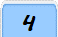
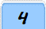

CYBER SECURITY
CYBER
CRIME TECHNIQUES
What
is Proxy Server ?
A proxy server acts as a gateway between your device and the internet, masking
your IP address and enhancing online privacy. But what exactly does it do, and
why is it critical for businesses, developers, and everyday users? In this
guide, we’ll break down proxy servers in simple terms exploring how they work,
their key benefits (like bypassing geo-blocks and securing sensitive data), and
the different types (residential, datacenter, and mobile proxies).
The proxy server also prevents the identification of the
client’s IP address when the client makes any request to any other servers. In
this guide, well explain proxy servers, explore their benefits (and
limitations), and reveal how they power everything from anonymous browsing to
global market research.
- Internet Client and Internet
resources: For Internet clients, Proxy servers also act as a shield for an
internal network against the request coming from a client to access the data
stored on the server. It makes the original IP address of the node remain
hidden while accessing data from that server.
- Protects
true host identity: In this method, outgoing traffic appears to come from
the proxy server rather than internet navigation. It must be configured to a
specific application such as HTTP or FTP.
For example, organizations can use a proxy to observe the traffic of their
employees to get the work efficiently done. It can also be used to keep a
check on any kind of highly confidential data leakage. Some can also use it
to increase their website rank.
-->Why to Use Private
Proxy.
- Defeat Hackers: To protect an
organization's data from malicious use, passwords are used and different
architects are set up, but still, there may be a possibility that this
information can be hacked in case the IP address is accessible easily. To
prevent such kind of misuse of Data Proxy servers are set up to prevent
tracking of original IP addresses instead data is shown to come from a
different IP address.
- Filtering of Content: By caching the
content of the websites, Proxy helps in fast access to the data that has
been accessed very often.
- Examine Packet Headers and
Payloads: Payloads and packet headers of the requests made by the user nodes
in the internal server to access social websites can be easily tracked and
restricted.
- To control internet usage of employees
and children: In this, the Proxy server is used to control and monitor how
their employees or kids use the internet. Organizations use it, to deny
access to a specific website and instead redirecting you with a nice note
asking you to refrain from looking at said sites on the company network.
- Bandwidth savings and improved
speeds: Proxy helps organizations to get better overall network performance
with a good proxy server.
- Privacy Benefits: Proxy servers are used
to browse the internet more privately. It will change the IP address and
identify the information the web request contains.
- Security: Proxy server is used to encrypt
your web requests to keep prying eyes from reading your transactions as it
provides top-level security.
-->How
Does The Proxy Server Operates ?
Every computer has its unique IP address which it uses
to communicate with another node. Similarly, the proxy server has its IP address
that your computer knows. When a web request is sent, your request goes to the
proxy server first. The Proxy sends a request on your behalf to the internet and
then collect the data and make it available to you. A proxy can change your IP
address So, the webserver will be unable to fetch your location in the world. It
protects data from getting hacked too. Moreover, it can block some web pages
also.

-->What is The Reason Of Using Proxy Server ?
There are some reasons why everyone should proxy server
because it provide following advantages including privacy, web scraping, fast
speed, saves bandwidth etc.

-->Advantages Of Proxy Server
Proxy server has multiple benefits like
- Security: Proxy Server provides security between
internet and system. They help your system from unauthorized user to access
your network
- Saves Bandwidth: A proxy server can save
bandwidth, especially in those environments where the same resources are
accessed by multiple users.
- Performance: Proxy server improves
performance, when a person requests for a resource, then the proxy can serve
it from its cache rather than fetching it from the original server this
helps to increase performance.
- Filteration: Proxy servers are used to
filter content based on keywords or file types.
- Access Control: There are some content
which is restricted in various countries, so proxy server helps to control
geographical access.
-->Disadvantages Of Proxy Server
- Proxy Server Risks: Free installation
does not invest much in backend hardware or encryption. It will result in
performance issues and potential data security issues. If you install a
"free" proxy server, treat very carefully, some of those might steal your
credit card numbers.
- Browsing history log: The proxy server
stores your original IP address and web request information is possibly
unencrypted form and saved locally. Always check if your proxy server logs
and saves that data – and what kind of retention or law enforcement
cooperation policies they follow while saving data.
- No encryption: No encryption means you
are sending your requests as plain text. Anyone will be able to pull
usernames and passwords and account information easily. Keep a check that
proxy provides full encryption whenever you use it.
-->Introduction to Password Attacks |
Ethical Hacking
Password Attacks are one of the imperative phases of
the hacking framework. Password Attacks or Cracking is a way to recuperate
passwords from the information stored or sent by a PC or mainframe. The
motivation behind password cracking is to assist a client with recuperating
a failed authentication or recovering a password, as a preventive measure by
framework chairmen to check for effectively weak passwords, or an assailant
can utilize this cycle to acquire unapproved framework access.
What is a Password Attack in Cyber Security?
Password attack is also known as Password
cracking where hackers try multiple
attempts to crack your password digitally. If they successfully crack the
password in that case they steal your sensitive information. They use a
brute force approach, various combinations, and techniques to crack your
password. Let's see if you created a LinkedIn account by putting easy
passwords such as your name with numbers like pooja123, and your date of
birth and you created another account on Facebook where you put the same
password as your LinkedIn account in that case if a hacker cracks the
password in the LinkedIn account so they easily crack the password in
Facebook account because the password in both accounts are same.
Types of Password Attacks
Password cracking is consistently violated
regardless of the legal aspects to secure from unapproved framework access,
for instance, recovering a password the customer had forgotten, etc. This
hack arrangement depends upon aggressors' exercises, which are ordinarily
one of the four types:
- Non-Electronic Attacks -This is
most likely the hacker's first go-to to acquire the target system
password. These sorts of password-cracking hacks don't need any
specialized ability or information about hacking or misuse of
frameworks. Along these lines, this is a non-electronic hack. A few
strategies used for actualizing these sorts of hacks are social
engineering, dumpster
diving, shoulder
surfing, and so forth.
- Active Online Attacks - This is
perhaps the most straightforward approach to acquiring unapproved
manager-level mainframe access. To crack the passwords, a hacker needs
to have correspondence with the objective machines as it is obligatory
for password access. A few techniques used for actualizing these sorts
of hacks are word reference, brute-forcing, password speculating, hash
infusion, phishing,
LLMNR/NBT-NS Poisoning, utilizing Trojan/spyware/keyloggers, and so
forth.
- Passive Online Attacks -An
uninvolved hack is a deliberate attack that doesn't bring about a change
to the framework in any capacity. In these sorts of hacks, the hacker
doesn't have to deal with the framework. In light of everything, he/she
idly screens or records the data ignoring the correspondence channel to
and from the mainframe. The attacker then uses the critical data to
break into the system. Techniques used to perform passive online hacks
incorporate replay attacks, wire-sniffing, man-in-the-middle
attacks, and so on.
- Offline Attacks -attacksDisconnected
hacks allude to password attacks where an aggressor attempts to
recuperate clear content passwords from a password hash dump. These
sorts of hacks are habitually dreary yet can be viable, as password
hashes can be changed due to their more modest keyspace and more
restricted length. Aggressors utilize preprocessed hashes from rainbow
tables to perform disconnected and conveyed network hacks.
Some of the Best Practices Protecting Against
Password Cracking Include
- Perform data security reviews to
screen and track password assaults.
- Try not to utilize a similar password
during the password change.
- Try not to share passwords.
- Do whatever it takes not to use
passwords that can be found in a word reference.
- Make an effort not to use clear
content shows and shows with weak encryption.
- Set the password change technique to
30 days.
- Try not to store passwords in an
unstable area.
- Try not to utilize any mainframe's or
PC's default passwords.
- Unpatched computers can reset
passwords during cradle flood or Denial
of Service assaults. Try to
refresh the framework.
- Empower account lockout with a
specific number of endeavors, counter time, and lockout span. One of the
best approaches to oversee passwords in associations is to set a
computerized password reset.
- Ensure that the computer or
server's BIOS is
scrambled with a password, particularly on devices that are unprotected
from real perils, for instance, centralized servers and PCs.
Conclusion
In a digital world, whether we have to go to any
website or anyany social media account the first thing is to create an
account that requires an email ID and password in that case we have to put a
strong password with the combinations of letters, numbers, and special
characters so that no one cracks your password and also make sure that thee
is no duplicacy of the password in multiple accounts, used different and
strong passwords in every accounts. Also using a password manager tool would
be a good choice. Password attacks are also about password cracking where
hackers try to attempt various combinations of passwords so that they crack
the password in the user account and steal the information.
 



Made with Passion by NIELIT Students.....!
CONTENT,S OF THIS PAGE ARE SUBJECT TO ©
COPYRRIGHT